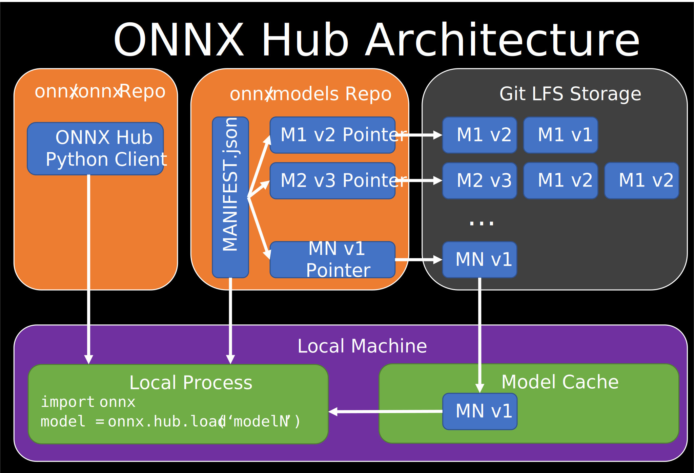

ONNX Model Hub¶
The ONNX Model Hub is a simple and fast way to get started with state of the art pre-trained ONNX models from the ONNX Model Zoo. Furthermore, this allows researchers and model developers the opportunity to share their pre-trained models with the broader community.
Install¶
The ONNX Model hub will be included in the onnx package from version 1.11 onwards.
To use the hub before the 1.11 release please install from the weekly build:
pip install -i https://test.pypi.org/simple/ onnx-weekly
Basic usage¶
The ONNX Model Hub is capable of downloading, listing, and querying trained models from any git repository, and defaults to the official ONNX Model Zoo. In this section we demonstrate some of the basic functionality.
First please import the hub using:
from onnx import hub
Downloading a model by name:¶
The load function will default to searching the model zoo for the latest model with a matching name,
download this model to a local cache, and load the model into a ModelProto
object for use with the ONNX runtime.
model = hub.load("resnet50")
Downloading from custom repositories:¶
Any repository with the proper structure can be a ONNX model hub. To download from other hubs,
or to specify a particular branch or commit on the main model hub one can provide the repo parameter:
model = hub.load("resnet50", repo='onnx/models:771185265efbdc049fb223bd68ab1aeb1aecde76')
Listing and inspecting Models:¶
The model hub provides APIs for querying the model zoo to learn more about available models. This does not download the models, but rather just returns information about models matching the given arguments
# List all models in the onnx/models:master repo
all_models = hub.list_models()
# List all versions/opsets of a specific model
mnist_models = hub.list_models(model="mnist")
# List all models matching a given "tag"
vision_models = hub.list_models(tags=["vision"])
One can also inspect the metadata of a model prior to download with the get_model_info function:
print(hub.get_model_info(model="mnist", opset=8))
This will print something like:
ModelInfo(
model=MNIST,
opset=8,
path=vision/classification/mnist/model/mnist-8.onnx,
metadata={
'model_sha': '2f06e72de813a8635c9bc0397ac447a601bdbfa7df4bebc278723b958831c9bf',
'model_bytes': 26454,
'tags': ['vision', 'classification', 'mnist'],
'io_ports': {
'inputs': [{'name': 'Input3', 'shape': [1, 1, 28, 28], 'type': 'tensor(float)'}],
'outputs': [{'name': 'Plus214_Output_0', 'shape': [1, 10], 'type': 'tensor(float)'}]},
'model_with_data_path': 'vision/classification/mnist/model/mnist-8.tar.gz',
'model_with_data_sha': '1dd098b0fe8bc750585eefc02013c37be1a1cae2bdba0191ccdb8e8518b3a882',
'model_with_data_bytes': 25962}
)
Local Caching¶
The ONNX Model hub locally caches downloaded models in a configurable location
so that subsequent calls to hub.load do not require network connection.
Default cache location¶
The hub client looks for the following default cache locations in this order:
$ONNX_HOME/hubif theONNX_HOMEenvironment variable is defined$XDG_CACHE_HOME/hubif theXDG_CACHE_HOMEenvironment variable is defined~/.cache/onnx/hubwhere~is the user home directory
Setting the cache location¶
To manually set the cache location use:
hub.set_dir("my/cache/directory")
Additionally one can inspect the cache location with:
print(hub.get_dir())
Additional cache details¶
To clear the model cache one can simply delete the cache directory using a python utility like shutil or os.
Furthermore one can choose to override the cached model using the force_reload option:
model = hub.load("resnet50", force_reload=True)
We include this flag for completeness but note that models in the cache are disambiguated with sha256 hashes so
the force_reload flag is not necessary for normal use.
Finally we note that the model cache directory structure will mirror the directory structure
specified by the model_path field of the manifest, but with file names disambiguated with model SHA256 Hashes.
This way, the model cache is human readable, can disambiguate between multiple versions of models, and can re-use cached models across different hubs if they have the same name and hash.
Architecture¶

The ONNX Hub consists of two main components, the client and the server.
The client code currently is included in the onnx package and can be pointed at a
server in the form of a hosted ONNX_HUB_MANIFEST.json within a github repository
such as the one in the ONNX Model Zoo.
This manifest file is a JSON document which lists all models and their metadata
and is designed to be programming language agnostic. An example of a well formed model manifest entry is as follows:
{
"model": "BERT-Squad",
"model_path": "text/machine_comprehension/bert-squad/model/bertsquad-8.onnx",
"onnx_version": "1.3",
"opset_version": 8,
"metadata": {
"model_sha": "cad65b9807a5e0393e4f84331f9a0c5c844d9cc736e39781a80f9c48ca39447c",
"model_bytes": 435882893,
"tags": ["text", "machine comprehension", "bert-squad"],
"io_ports": {
"inputs": [
{
"name": "unique_ids_raw_output___9:0",
"shape": ["unk__475"],
"type": "tensor(int64)"
},
{
"name": "segment_ids:0",
"shape": ["unk__476", 256],
"type": "tensor(int64)"
},
{
"name": "input_mask:0",
"shape": ["unk__477", 256],
"type": "tensor(int64)"
},
{
"name": "input_ids:0",
"shape": ["unk__478", 256],
"type": "tensor(int64)"
}
],
"outputs": [
{
"name": "unstack:1",
"shape": ["unk__479", 256],
"type": "tensor(float)"
},
{
"name": "unstack:0",
"shape": ["unk__480", 256],
"type": "tensor(float)"
},
{
"name": "unique_ids:0",
"shape": ["unk__481"],
"type": "tensor(int64)"
}
]
},
"model_with_data_path": "text/machine_comprehension/bert-squad/model/bertsquad-8.tar.gz",
"model_with_data_sha": "c8c6c7e0ab9e1333b86e8415a9d990b2570f9374f80be1c1cb72f182d266f666",
"model_with_data_bytes": 403400046
}
}
These important fields are:
model: The name of the model used for queryingmodel_path: The relative path of the model stored in Git LFS.onnx_version: The ONNX version of the modelopset_version: The version of the opset. The client downloads the latest opset if left unspecified.metadata/model_sha: Optional model sha specification for increased download securitymetadata/tags: Optional high level tags to help users find models by a given type
All other fields in the metadata field are optional for the client but provide important details for users.
Adding to the ONNX Model Hub¶
Contributing an official model¶
The simplest way to add a model to the official onnx/models version model hub is to follow
these guidelines to contribute your model. Once contributed,
ensure that your model has a markdown table in its README.md
(Example). The model hub
manifest generator will pull information from these markdown tables. To run the generator:
git clone https://github.com/onnx/models.git
git lfs pull --include="*" --exclude=""
cd models/workflow_scripts
python generate_onnx_hub_manifest.py
Once a new manifest is generated add, submit it in a pull request to onnx/models
Hosting your own ONNX Model Hub¶
To host your own model hub, add an ONNX_HUB_MANIFEST.json to the top level of your github repository
(Example). At a minimum your
manifest entries should include the fields mentioned in
the Architecture Section of this document.
Once committed, check that you can download models
using the “Downloading from custom repositories” section of this doc.